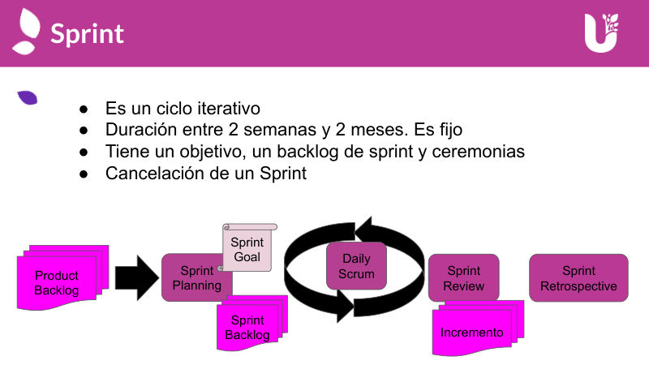
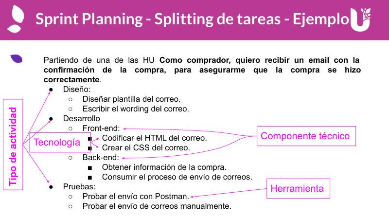

Clase 10 · 14/10/2026 · Parcial del 18/11
El Sprint por dentro: Sprint 0, Planning, estimación y refinamiento
Cómo una idea grande del backlog se convierte en historias que entran a un Sprint y en tareas de hasta 8 horas.
Viene de la Clase 9: roles, Product Backlog ordenado con MoSCoW y la DoD.
Alimenta la Clase 11 (Daily, Review y Retrospectiva), Kanban (que no usa Sprints) y el parcial del 18/11.
Antes de empezar · repaso de Clase 9
Sin mirar: los 4 roles, las 4 ceremonias, los 3 artefactos y los 3 pilares de Scrum. ¿Qué es la DoD?
Roles (la cátedra cuenta 4): Equipo Scrum, Scrum Master, Product Owner y desarrolladores. Ceremonias: planificación, diaria, revisión y retrospectiva. Artefactos: Product Backlog, Sprint Backlog e Incremento. Pilares: transparencia, inspección y adaptación. DoD: el acuerdo de qué significa «terminado» (Scrum parte 2, p3 y p4). Repasar en la Clase 9.
Numeración. El PDF se titula «Clase 5: Scrum Parte 2». En el cronograma es la clase 10 (14/10): «diaria, refinamiento, planning, sprint y sprint 0, review».
Cátedra contra Guía de Scrum. En cinco puntos de esta clase la cátedra dice algo distinto de la Guía de Scrum 2020, que es lo que suele aparecer al buscar en internet. Para el parcial vale la cátedra:
| Tema | Cátedra (para el parcial) | Guía de Scrum 2020 (complemento) |
|---|---|---|
| Duración del Sprint | De 2 semanas a 2 meses, fija (p8) | Un mes o menos |
| Daily | Tres preguntas: qué hice ayer, qué haré hoy, qué impedimentos tengo (p18) | Formato libre: las tres preguntas ya no figuran |
| Definition of Ready | Existe: es un contrato de equipo (p10) | No la menciona |
| Refinamiento | La modera el PO; «Scrum lo ve como parte de la planning» (p15) | Actividad continua, sin evento propio |
| Sprint 0 | No está en la guía, pero se usa: máximo 2 Sprints (p7) | No lo menciona |
El problema
La Clase 9 dejó un Product Backlog ordenado. Pero un ítem como «Reservas en línea» no se puede hacer en dos semanas, y nadie sabe cuánto cuesta. Esta clase responde tres preguntas: ¿cuándo una historia está lista para entrar al Sprint? (DoR), ¿cuánto pesa? (estimación ágil) y ¿cómo se parte algo grande? (slicing y splitting).
Idea 1 · El Sprint: un ciclo de tiempo fijo
Según la cátedra, el Sprint es un ciclo iterativo, dura entre 2 semanas y 2 meses, y esa duración es fija. Tiene un objetivo (Sprint Goal), un backlog de sprint y ceremonias. La diapositiva también nombra la cancelación de un Sprint (Scrum parte 2, p8). El repaso de la clase siguiente lo resume así: «time box de 2 semanas a 2 meses donde se incrementa valor: 4 ceremonias, 1 objetivo» (Scrum parte 3, p3).

Ejemplo transversal. Los ejemplos propios de esta lección usan un solo producto: la web de reservas de restaurantes con la que la cátedra explicó MoSCoW (Clase 9). Los ejemplos de la cátedra (tienda en línea, Mercado Libre) van marcados como tales.
Complemento: cancelación. La diapositiva solo la nombra. Según la Guía 2020, solo el Product Owner puede cancelar un Sprint, y lo hace cuando el Sprint Goal se vuelve obsoleto. Ejemplo: la empresa decide no cobrar comisión a mitad del Sprint que construía el cobro de comisiones.
Idea 2 · Sprint 0: preparar el terreno
El Sprint 0 no es parte de la guía Scrum. Es la planificación macro del proyecto y la puesta a punto, y dura como máximo lo equivalente a 2 Sprints (Scrum parte 2, p7). Las tareas típicas, con un ejemplo en la web de reservas:
| Tarea de Sprint 0 (p7) | En la web de reservas (ejemplo propio) |
|---|---|
| Definiciones de arquitectura | Web y base de datos propias; el aviso de reserva sale por un servicio de correo externo |
| Armado de equipos | Quién es PO (alguien del negocio), Scrum Master y desarrolladores |
| Capacitaciones | Scrum para quienes nunca trabajaron en Sprints; la tecnología elegida |
| Armado del backlog inicial | Épicas: búsqueda, reservas, calificaciones, comisiones |
| Desarrollar el pivote | Una historia chica y conocida que vale «3 puntos» y sirve de referencia para estimar las demás |
| Armado de entornos | Desarrollo, pruebas y producción |
| Acordar DoR y DoD iniciales | Ver los ejemplos de la idea 3 |
No es una cascada escondida. El Sprint 0 se parece al inicio y la planificación de un proyecto en cascada, pero está acotado a 2 Sprints: se planifica lo mínimo para arrancar, no todo el proyecto. Y como no es parte de la guía Scrum, no cuenta entre las 4 ceremonias.
Idea 3 · Sprint Planning y Definition of Ready
La Sprint Planning es la primera tarea del Sprint: ahí se define el trabajo a realizar (Scrum parte 2, p9). Se hace en cuatro pasos:
- El PO explica las historias de usuario candidatas¿Qué es lo más valioso ahora?
- El equipo estima cuáles puede terminar en el Sprint¿Cuánto entra?
- Se acuerda el objetivo del Sprint¿Para qué sirve este Sprint?
- El equipo separa las historias en tareas¿Cómo lo hacemos? (splitting)
Definition of Ready (DoR)
La DoR es un contrato de equipo, se puede actualizar si hace falta e indica si una historia de usuario puede incluirse en el Sprint. Ejemplos de la cátedra: diagramas de flujo, criterios de aceptación, diseños de pantalla, dependencias resueltas (Scrum parte 2, p10).
| DoR · Definition of Ready | DoD · Definition of Done | |
|---|---|---|
| Pregunta | ¿Esta historia puede entrar al Sprint? | ¿Esta historia está terminada? |
| Momento | Antes y durante la Planning | Al cerrar el trabajo; lo que la cumple va a la Review |
| Quién la define | El equipo: es un contrato de equipo y se puede actualizar | El Equipo Scrum: es un contrato en forma de checklist |
| Ejemplos de la cátedra | Diagramas de flujo, criterios de aceptación, diseños de pantalla, dependencias resueltas | Criterios de aceptación cumplidos, desplegada en Stage, pruebas automatizadas, regresión finalizada |
| Ejemplo en la web de reservas | «Reservar una mesa» tiene criterios de aceptación, el diseño de la pantalla aprobado y el servicio de correo ya contratado | «Reservar una mesa» pasó las pruebas, está desplegada en Stage y no rompió la búsqueda |
Regla para recordar: la DoR es la puerta de entrada al Sprint y la DoD es la puerta de salida hacia el Incremento. Ojo con los criterios de aceptación, que aparecen en las dos: en la DoR tienen que estar escritos; en la DoD tienen que estar cumplidos.
Idea 4 · Estimación ágil y planning poker
La estimación ágil se basa en puntos de estimación, que combinan experiencia, incertidumbre y complejidad. No son horas. Se define un pivote como referencia, y hay varias técnicas: talles de camiseta (XXXL a XS), vasos de Starbucks (Corto, Alto, Grande, Venti, Trenta) y planning poker (Scrum parte 2, p11). El repaso de la clase 11 suma «caramelos» y números de Fibonacci (Scrum parte 3, p3).
Planning poker, paso a paso
Usa cartas numeradas con la serie de Fibonacci (1, 2, 3, 5, 8, 13, 21…). Pasos (Scrum parte 2, p12):
- El PO presenta una historia.
- Cada miembro elige la carta que considera.
- Se muestran las cartas al mismo tiempo.
- Los dos extremos exponen su opinión.
- Se repite desde el paso b (elegir carta).
Ejemplo resuelto
Pivote: «Como comensal, quiero ver los datos de un restaurante, para decidir si reservo» = 3 puntos. Historia nueva: «Como comensal, quiero recibir la confirmación de mi reserva por WhatsApp, para tenerla a mano».
| Ronda | Cartas | Qué pasa |
|---|---|---|
| 1 | 3 · 5 · 5 · 13 | Hablan los extremos. El del 3: «es mandar un mensaje, como el email que ya enviamos». El del 13: «nunca integramos WhatsApp y no sabemos si el proveedor nos habilita». Esa incertidumbre es justo lo que miden los puntos. |
| 2 | 5 · 8 · 8 · 8 | Ya hay casi consenso: 8 puntos, casi el triple que el pivote. Y una alerta: si la habilitación del proveedor no está resuelta, la historia tiene una dependencia abierta y no cumple la DoR. |
Lo que el ejemplo muestra. No se promedia (el promedio de la ronda 1 daría 6,5, que ni siquiera es una carta) ni gana la mayoría: se vuelve a votar después de escuchar a los extremos, porque suelen saber algo que el resto no. Las cartas se muestran al mismo tiempo para que nadie copie al que habló primero. Y los puntos son relativos al pivote, no horas.
Complemento: ¿por qué Fibonacci? Porque los saltos crecen (5, 8, 13): cuanto más grande es algo, menos sentido tiene discutir si vale 9 o 10. Una historia de 13 o 21 suele ser señal de que hay que partirla (slicing).
Idea 5 · Partir el trabajo: slicing y splitting
Es la confusión más probable del tema. Las dos palabras significan «partir», pero parten cosas distintas en momentos distintos:
Historias de usuario
Su propósito es articular cómo una función de software le dará valor al cliente, y detallan las características del producto desde la óptica del usuario. La jerarquía es épica → historia de usuario → tarea (Scrum parte 2, p17). Estructura:
Como [rol del sistema] · quiero [acción a realizar] · para [objetivo].
Cátedra: «Como comprador, quiero poder guardar un producto, para comprarlo en otro momento».
Splitting: de historia a tareas (en la Planning)
Consiste en separar la historia de usuario en tareas, con tres criterios: por tipo de actividad (flujos, diseño, desarrollo, prueba, despliegue), por componente técnico (front-end, back-end, integraciones) y por tecnología o herramienta (Selenium, SoapUI, Java, SQL) (Scrum parte 2, p13). La cátedra lo muestra con un ejemplo que combina los tres:

Slicing: de algo grande a historias más chicas (en el refinamiento)
La cátedra explica las siete técnicas con Mercado Libre (Scrum parte 2, p16). Acá están junto con la épica «Reservas en línea» de la web de restaurantes, y con la palabra que delata cada técnica:
| Técnica | Mercado Libre (cátedra) | Reservas en línea (ejemplo propio) | Lo que delata |
|---|---|---|---|
| Por roles | Comprador, vendedor | Comensal que reserva · restaurante que recibe la reserva | Son personas |
| Por pasos del flujo | Buscar, carrito, envío o retiro, pagar | Buscar restaurante · elegir día y hora · confirmar · recibir el aviso | Es una secuencia |
| Por flujo principal / alternativo | Fondos insuficientes, tarjeta vencida | No hay mesa a esa hora · el restaurante está cerrado ese día | Es lo que sale mal |
| Por regla de negocio | Envío gratis desde $30.000 | Más de 8 personas: la reserva pide una seña | Es una condición |
| Por datos de entrada | Filtros para autos: km, transmisión, marca | Filtros: barrio, tipo de cocina, precio | Lo carga el usuario |
| Por datos de salida | Email de compra, aviso en pantalla | Confirmación por email · aviso en pantalla | Lo devuelve el sistema |
| Por operaciones | Publicar, modificar, dar de baja | Crear, modificar, cancelar una reserva | Son verbos sobre un mismo objeto |
Ejemplo completo: la actividad de clase resuelta
La consigna (Scrum parte 2, p20) pedía tomar ítems del backlog, aplicar una técnica de slicing, aplicar otra a lo que salió y reescribir todo como historias de usuario. Con un ítem de la web de reservas:
- Ítem: «Reservas en línea»Épica: no entra en un Sprint
- Comensal que reserva · restaurante que recibeDos piezas, todavía grandes
- Buscar · elegir día y hora · confirmar · recibir el avisoYa se pueden estimar
- «Como comensal, quiero elegir el día y la hora de mi reserva, para asegurarme una mesa»Lista para el refinamiento
Y en la Planning, esa historia se parte en tareas (splitting): diseño: pantalla del calendario; front-end: selector de día y hora; back-end: consultar las mesas libres; pruebas: probar el servicio con Postman y la pantalla a mano.
La prueba para no confundirlos. Si cada pedazo le sigue sirviendo al usuario por sí solo («elegir día y hora»), es slicing y salen historias. Si un pedazo suelto no le sirve a nadie («consultar las mesas libres» sin pantalla), es splitting y salen tareas técnicas de hasta 8 horas.
Idea 6 · Backlog Refinement
- El equipo debe entender las historias, evaluar si están completas, si las dependencias están cumplidas y si entran en un Sprint o hay que partirlas en historias más chicas.
- Es la única reunión que modera el PO en lugar del Scrum Master.
- Scrum la ve como parte de la planning.
- Se puede invitar a gente de fuera del equipo para aclarar temas complejos (Scrum parte 2, p15). Ejemplo: alguien del proveedor de pagos que explique cómo se cobra una seña.
Todo junto: el Sprint en un mapa
Arriba, las 4 ceremonias en orden de tiempo; al medio, los artefactos; abajo, el refinamiento como una banda que corre durante todo el Sprint. El slicing sale de esa banda hacia el Product Backlog; el splitting es el paso 4 de la Planning.
Daily y Review. Esta clase también las presenta (p18 y p19), pero se repiten en Scrum parte 3. Están en la Clase 11.
Práctica 1 · Recuperar sin mirar
Sin volver arriba: duración del Sprint y del Sprint 0 según la cátedra.
Sprint: de 2 semanas a 2 meses, duración fija. Sprint 0: como máximo lo equivalente a 2 Sprints, y no está en la guía Scrum.
Sin volver arriba: los cuatro pasos de la Sprint Planning.
El PO explica las HU candidatas → el equipo estima cuáles puede terminar → se acuerda el objetivo del Sprint → el equipo separa las HU en tareas.
Sin volver arriba: los cinco pasos del planning poker.
El PO presenta una historia → cada uno elige carta → se muestran todas a la vez → los dos extremos explican → se vuelve a votar.
Sin volver arriba: ¿qué se parte con slicing y qué con splitting? Nombrar al menos cuatro técnicas de slicing.
Slicing parte historias o épicas en historias más chicas (refinamiento): roles, pasos del flujo, principal/alternativo, regla de negocio, datos de entrada, datos de salida, operaciones. Splitting parte una historia en tareas (planning): tipo de actividad, componente técnico, tecnología o herramienta.
Práctica 2 · Preguntas
Según la cátedra, ¿cuánto dura un Sprint?
¿Cuál es la única reunión que modera el PO en lugar del Scrum Master?
Una historia no tiene criterios de aceptación y depende de una API que todavía no existe. ¿Qué dice el equipo en la Planning?
«Separar la historia en diseño, front-end, back-end y pruebas» es…
En planning poker salen 2, 3, 3 y 13. ¿Qué se hace?
Trampas de opción múltiple
| La opción tentadora | Por qué está mal |
|---|---|
| «El Sprint dura un mes o menos» | Eso es la Guía 2020. Cátedra: de 2 semanas a 2 meses, y es fijo |
| «El Sprint 0 dura 2 semanas» | Dura como máximo lo equivalente a 2 Sprints, y no es parte de la guía Scrum |
| «La Planning empieza con el equipo estimando» | Primero el PO explica las historias candidatas; después se estima, se acuerda el objetivo y se parte en tareas |
| «La DoR la impone el PO y no cambia» | Es un contrato de equipo y se puede actualizar |
| «Los puntos de estimación son horas» | Combinan experiencia, incertidumbre y complejidad, relativos a un pivote. Los tres valores en días (optimista, más probable, pesimista) son PERT, de la parte cascada |
| «En planning poker se promedia» o «gana la mayoría» | Hablan los dos extremos y se vuelve a votar |
| «Vasos de Starbucks es una técnica de slicing» | Es de estimación, como los talles de camiseta y el planning poker |
| «Splitting es partir en historias más chicas» | Eso es slicing (refinamiento, 7 técnicas). Splitting parte una historia en tareas (planning, 3 criterios) |
| «El refinamiento lo modera el Scrum Master» | Es la única reunión que modera el PO, y Scrum la ve como parte de la planning |
| «Por componente técnico» como técnica de slicing | Es un criterio de splitting, junto con tipo de actividad y tecnología o herramienta |
Para repasar: glosario y hoja de repaso ágil (imprimible).